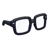
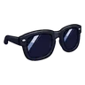
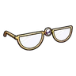
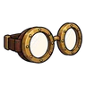
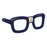
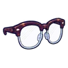
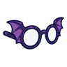
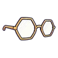

แว่นแว่นทั้งหมด 28 ชิ้นชื่อLvค่าสถานะได้จากแว่นกลม1INT +1 · HIT +2—แว่นกรอบหนา1DEX +1 · HIT +3หนูนาขโมยข้าว 0.15%แว่นกันแดด1คริ +5% · FLEE +3ผึ้งทานตะวัน 0.08%แว่นจันทร์เสี้ยว1INT +2 · SP +15หิ่งห้อยหมอยา 0.08%แว่นตาเดียว1DEX +2 · คริ +4%ผู้ช่วยนักดาราศาสตร์กลวง 0.06%แว่นช่างกล1DEF +3 · DEX +1มดขุดอุโมงค์ 0.06%แว่นหัวใจ1——แว่นดาว1——แว่นตาแมวชมพู1——แว่นกลมเลนส์ชมพู1——แว่นกรอบใบไม้1——แว่นกรอบดอกไม้1——แว่นหน้าแมว1——แว่นกรอบไม้3VIT +1 · HP +10มันฝรั่งเดินได้ 0.15%แว่นกรอบหนาพันเทป5INT +1 · DEX +1แครอทจอมพุ่ง 0.15%แว่นว่ายน้ำ8FLEE +3 · วิ่งเร็ว +2%นากนักล่า 0.15%แว่นนักบินกรอบทอง20คริ +4% · HIT +4นกกระเต็นดำน้ำ 0.08%แว่นนักสืบครึ่งกรอบ22INT +1 · HIT +4โครงกระดูกพลธนู 0.08%แว่นปีกค้างคาว25AGI +2 · FLEE +3ค้างคาวรัตติกาล ร่างแดงเลือดนก 0.08%แว่นหกเหลี่ยมทอง28INT +2 · DEX +1แมลงปอจ่าฝูง 0.08%ผ้าปิดตาโจรสลัด30STR +2 · คริ +3%โจรปล้นคาราวาน 0.08%แว่นนักประดิษฐ์เลนส์ซ้อน35DEX +3 · HIT +3กล้องดูดาวเดินได้ 0.08%แว่นปีกผีเสื้อราตรี40INT +2 · SP +15ผีเสื้อผงหลับ 0.08%แว่นเปลวไฟ50STR +2 · คริ +4%ภูตเถ้าถ่าน 0.06%แว่นสกีเลนส์รุ้ง55DEF +3 · FLEE +5แพะภูเขา 0.06%แว่นคริสตัลน้ำแข็ง60INT +3 · MDEF +3หมาป่าเงาจันทร์ ร่างน้ำค้างแข็ง 0.06%แว่นกันแดดปรอทรุ้ง65คริ +5% · FLEE +4โกเลมหินแดง ร่างผลึก 0.06%แว่นวิชั่นไซเบอร์80DEX +3 · HIT +6 · คริ +3%คนกรอกแสง 0.03%